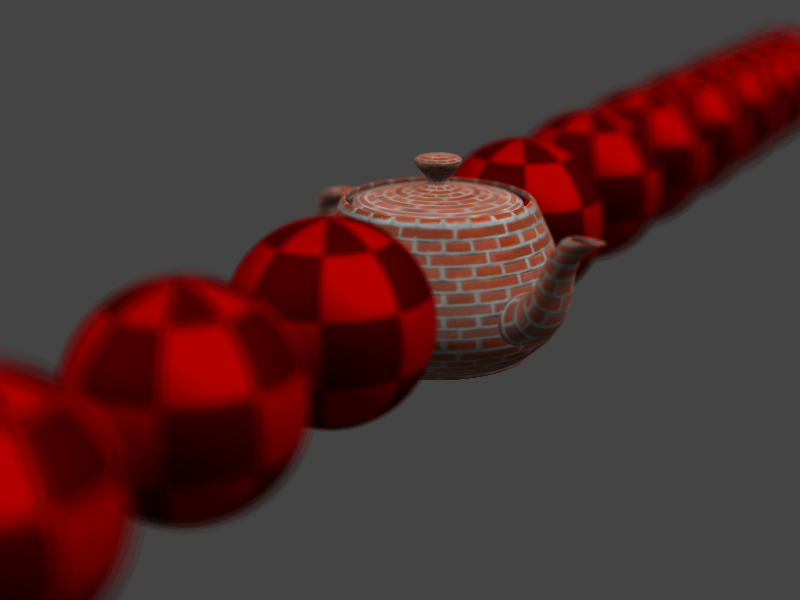
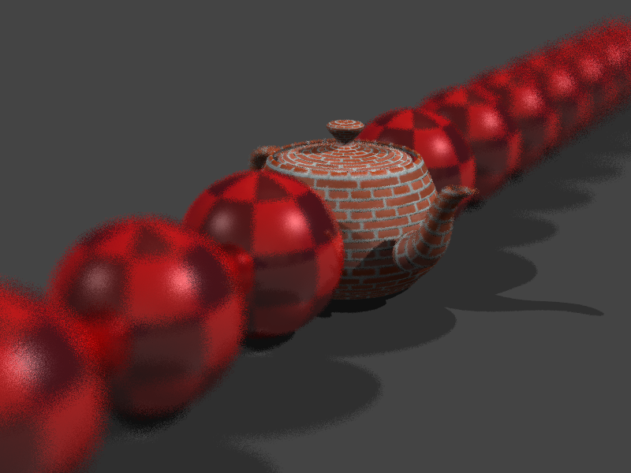
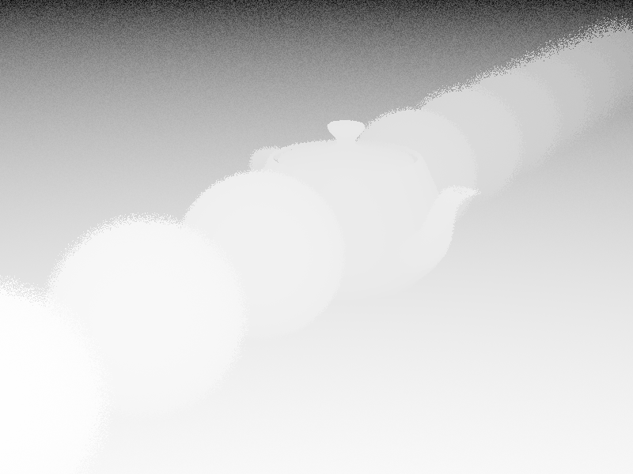
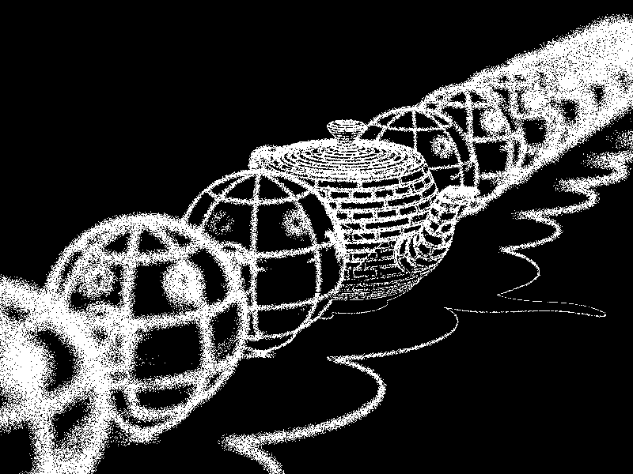

CS-6620 Project 9 - Depth of Field
Name: Hsuan Lee
e-mail: hsuan.lee@utah.edu
MacBook Pro (Retina, 13-inch, Early 2015)
Processor
2.9GHz intel Core i5
Memory
8GB 1867 MHz DDR3
Graphics
Intel Iris Graphics 6100 1536 MB
Input

Final Result
Render time with BVH(8 threads) : 0:02:19.
4 samples per pixel:
Output
Z-buffer image


adaptive sampling (maximun samples: 64) :
Render time with BVH(8 threads) : 0:14:50.
Output
Sample Counts
